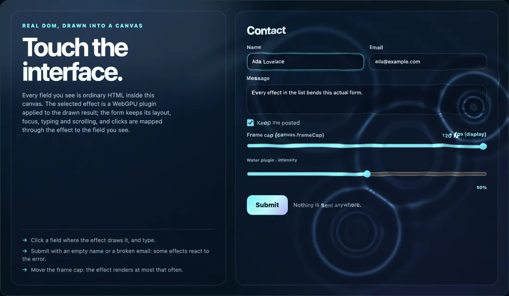

HTML-in-Canvas Polyfill
Render live HTML inside canvas.
Use the proposed HTML-in-Canvas API (<canvas content="drawable">, drawElementImage, the paint event) in modern Safari and Firefox, with native support used automatically where available: in a browser that implements the API, such as Chrome 157, the polyfill steps aside and the browser draws natively. The HTML stays real and live: forms keep their focus, typing, scrolling and hit testing, and stay in the accessibility tree. Explore interactive forms, Canvas 2D rendering and optional WebGPU effects.
Release candidate. 1.0.0-rc.9 follows a proposed standard, which may still change. Until 1.0.0 its stable rows change only by fixes; experimental rows may change in any minor release, and unqualified rows promise nothing. Check the stability table, the browser support and the known limitations before integrating.

<input>. The demo starts only when you open it.Install
From npm, for a bundler (TypeScript declarations included):
npm install @giuseppe-scotto-lavina/html-in-canvas-polyfillimport { install } from '@giuseppe-scotto-lavina/html-in-canvas-polyfill';
install(); // synchronous: call it before your code uses the APITo download nothing in a browser that implements the API, use the loader instead: it makes the same decision first, and fetches the core (and, on Firefox and Safari, the engines bundle) only where the polyfill runs, and the native bridge with the core over an earlier native build that the bridge completes. With a bundler, import { load } from '@giuseppe-scotto-lavina/html-in-canvas-polyfill/loader'; from a CDN, one script tag:
<script src="https://cdn.jsdelivr.net/npm/@giuseppe-scotto-lavina/html-in-canvas-polyfill@1.0.0-rc.9/dist/hic-live-loader.iife.min.js"></script>
<script type="module">
const { status, installed } = await HicLiveLoader.load(); // 'native' | 'native-bridged' | 'polyfill' | 'refused' | 'error'
// then use the standard API: canvas.onpaint = () => ctx.drawElementImage(form, 0, 0);
</script>The full example, the plain script tags and the loader's options: the quick start and getting started.
What it is for
A live form under a GPU effect
A WebGPU effect plugin bends the drawn form; the form stays usable through it, and clicks are mapped to the field you see.
HTML in a Canvas 2D scene
A contact form drawn with
drawElementImagefromonpaint; focus, typing and validation work where it is drawn.HTML as a WebGL or WebGPU texture
A spinning cube textured with a live form through
texElementSubImage2D; WebGPU uploads withdrawElementImageToTexture.
Browser support
Qualified: this kind of browser or device has run the test suites. Unqualified: expected to work, but it has not run them, so nothing is promised there.
| Browser | What runs | Status |
|---|---|---|
| Chrome 157 and later, desktop | the browser's own implementation; the polyfill steps aside | qualified |
| Chrome 154 to 156, desktop | the polyfill | qualified |
| Firefox 155 and later, desktop | the polyfill | qualified |
| Safari 27 and later, desktop | the polyfill | qualified |
| Safari on iPadOS 26 and later | the polyfill, with phone budgets | qualified on a physical iPad Pro |
| Chrome for Android 130 and later | the polyfill, with phone budgets | qualified on two physical phones |
| Safari on the iPhone, iOS 26 and later | expected to run as on the iPad | unqualified: run only on the iOS Simulator, never on a physical iPhone on iOS 26 or later |
| Edge, Opera, Brave and other desktop Chromium; Chrome 130 to 153 | expected to run as in Chrome | unqualified |
| Older Firefox and Safari, web views inside apps, Firefox for Android | refused with one console warning | refused |
Row by row, with versions and evidence: the support matrix and the stability table. The effect plugins and the frame cap are experimental extensions of this library, not part of the HTML-in-Canvas proposal. The effect plugins need WebGPU; the demos fall back to 2D without it.
Demos
Each page below draws live HTML into a canvas: click and type into what you see.
- plugins: the effect gallery: pick a WebGPU effect plugin and apply it to one live form, with its controls, its actions and a frame cap slider (falls back to 2D without WebGPU).
- effect-plugin: the smallest page with effects: the effects host, the water plugin, a frame cap, and a disintegrate transition run from the page's submit handler (falls back to 2D without WebGPU).
- playground: edit the explainer example and run it in the browser; Share puts your code in a link.
- basic: the WICG explainer example, unchanged.
- form: a contact form drawn with
drawElementImagefromonpaint. - scroll-and-resize: a scrolling list and a responsive layout inside one canvas.
- webgl-texture: a spinning cube textured with a live form (
texElementSubImage2D).
Field test: a guided check of this polyfill, about six minutes, on your own device (Windows, a phone, another Mac). It compares the canvas with the plain page as your screen shows them, measures typing and scrolling, and ends with one report file to send back. Nothing is sent anywhere by the page.
Documentation and feedback
- Source and README, the FAQ and the API contract
- Releases and the changelog
- The npm package
- Report a problem: the issue templates ask for the browser, the device and a page that reproduces it.